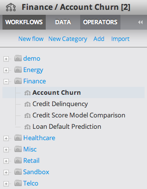

All users can manage their Personal workflows from the Workflow tab of the Explorer.
Flows can be organized into categories by dragging and dropping the workflow onto the desired category.
To create a new category, click 'New Category' and specify a unique name.
To rename a category, right-click the category, choose 'Rename Category', and specify a new name.
To remove a category, right-click the category and choose 'Remove Category.'
